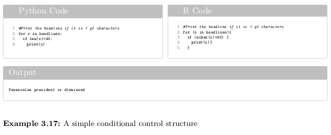
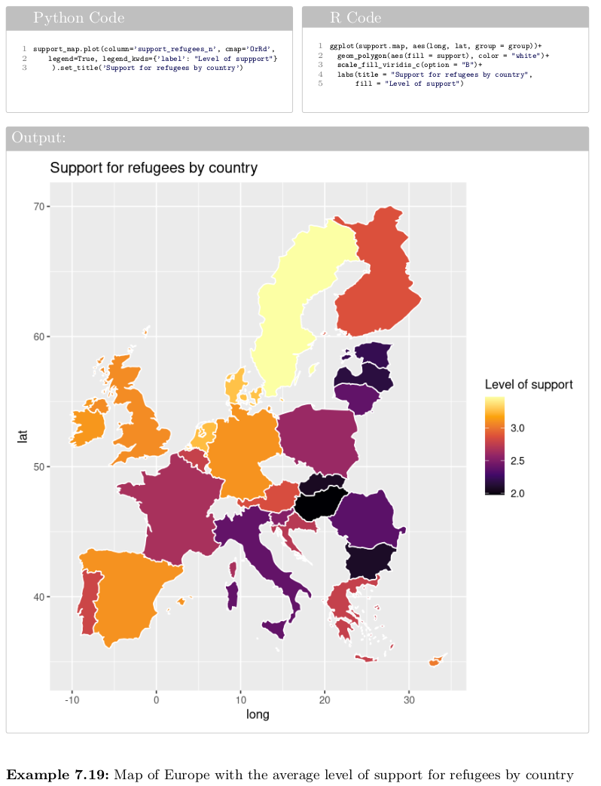
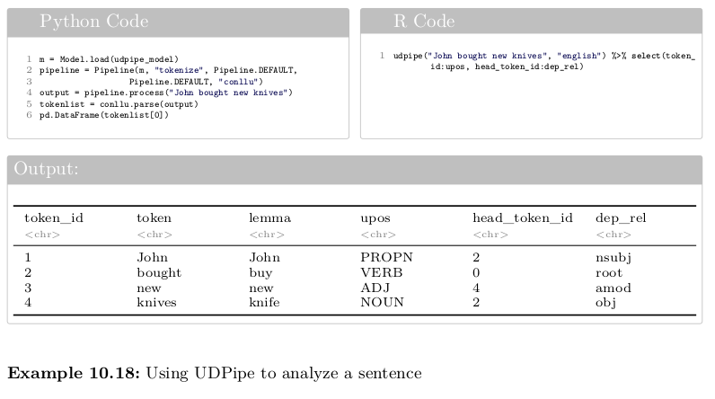
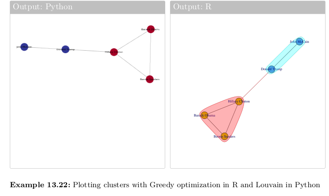
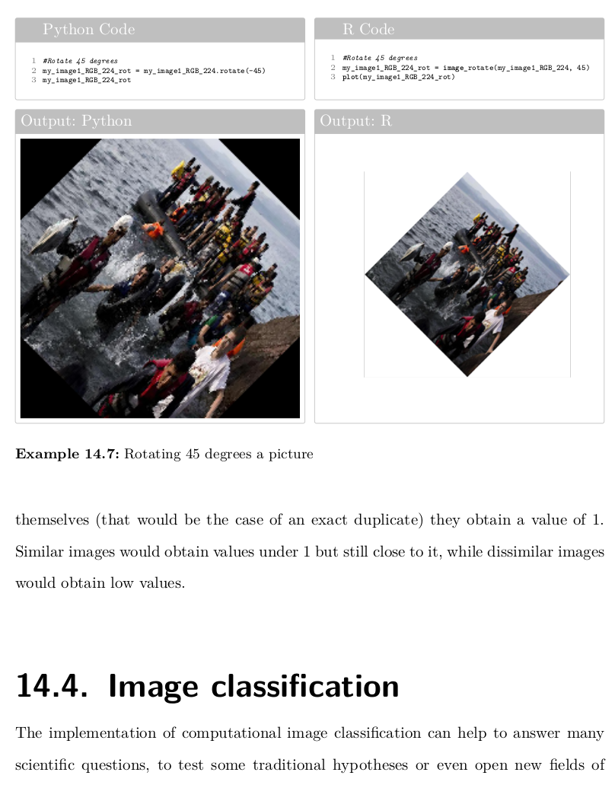
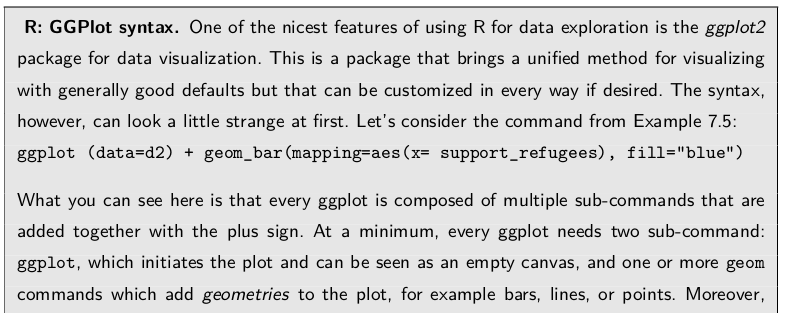
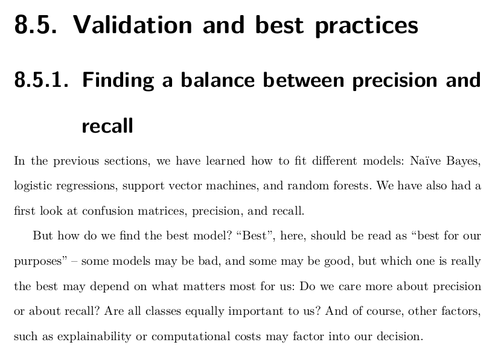

Upcoming book:
Computational Analysis of Communication:
A practical introduction to the analysis of texts, networks, and images with code examples in Python and R
Wouter van Atteveldt, Damian Trilling, Carlos Arcila; to be published August 24 2021
[Description | Highlights | Table of Contents]
This book is aimed at students and (aspiring) practitioners of computational social science, especially related to the analysis of digital communication. With this book and the accompanying code examples and video tutorials, you can learn data wrangling, machine learning, text analysis, and more. All examples are given side-by-side in Python and R, allowing you to pick your favorite language but also showing the differences and many similarities at a glance.
Uniquely, the full text of the book, including explanation and code examples, will be released on this website as soon as it hits the market. Please contact me if you have any questions or would like to have a sneak preview.
[Description | Highlights | Table of Contents]
Longer Description
Computational methods are rapidly gaining popularity in social science disciplines such as sociology, political science, psychology, (political) communication and media studies and are increasingly becoming part of the curriculum. Yet, there is no textbook that teaches in a practical way how computational methods originating from computer science, data science, and computer linguistics can be used within these disciplines.
The book uses an integrated approach to teach computational techniques in the context of social science and communication studies questions. Methods and code examples are directly linked to social science theory and cases from the literature. All techniques in the book are explained with code examples in both Python and R. The book teaches data analytics, computational thinking, and programming skills that have broad value in the private sector and within academia.
Students can use the book to learn useful techniques for analysing data that are relevant to the social sciences such as data management and visualization and text analysis. Students do not need to have programming experience, but can pick up the needed programming skills while working with the provided examples. As far as possible, all examples are linked to relevant societal questions, communication processes and social science theory and show how the techniques can be used to answer interesting and relevant questions. The book can be used cover-to-cover and will give students a very thorough introduction to computational social science, but it is also possible to use only relevant chapters.
[Description | Highlights | Table of Contents]
Some Highlights:
Gentle Introduction to using Python and R with side-by-side examples
{kind=link}
Data visualization
{kind=link}
Natural Language Processing
{kind=link}
Network analysis
{kind=link}
Dealing with visual data
{kind=link}
Explainers for language-specific features
{kind=link}
Best practices and recommendations
{kind=link}
[Description | Highlights | Table of Contents]
Table of Contents
Part 1: Getting started
- Chapter 1: Introduction
- The role of computational analysis in social science
- Why Python and/or R?
- How to use this book?
- Installing R and Python
- Installing third-party packages
- Chapter 2: Fun with data and visualizations
- Fun with tweets
- Fun with textual data
- Fun with visualizing geographic information
- Fun with networks
- Chapter 3: Programming concepts for data analysis
- About objects and data types
- Simple control structures: loops and conditions
- Functions and methods
- Chapter 4: How to write code
- Re-using code: how not to re-invent the wheel
- Understanding errors and getting help
- Best practices: beautiful code, GitHub, and notebooks
Part 2: Cleaning and analyzing data
- Chapter 5: From file to data frame and back
- Why and when do we use data frames?
- Reading and saving data
- Data from online sources
- Chapter 6: Data wrangling
- Filtering, selecting, and calculating
- Calculating values
- Grouping and aggregating
- Merging data
- Reshaping data: wide to long and long to wide
- Restructuring ‘messy’ data
- Chapter 7: Exploratory data analysis
- Simple exploratory statistics
- Visualizing data
- Clustering and dimensionality reduction
- Chapter 8: Statistical Modeling and Supervised Machine Learning
- Statistical modeling and prediction
- Concepts and Principles
- Classical Machine Learning: From Naive Bayes to neural networks
- Deep Learning
- Validation and best practices
Part 3: Text Analysis
- Chapter 9: Processing text
- Text as a string of characters
- Regular expressions
- Using Regular expressions in Python and R
- Chapter 10: Text as data
- The bag of words and term-document matrix
- Cleaning, weighting, selecting features
- Advanced representations f text
- Natural language processing
- Chapter 11: Automatic analysis of text
- Overview of text analysis methods
- Dictionary approaches to text analysis
- Supervised text analysis: automatic classification and sentiment analysis
- Unsupervised text analysis: topic modeling
Part 4: Beyond Structured Data
- Chapter 12: Scraping online data
- Using open web APIs
- Retrieving and parsing web pages
- Authentication, cookies, and sessions
- Ethical, legal and practical considerations
- Chapter 13: Introduction to Network Data
- Representing and visualizing networks
- Social Network Analysis
- Chapter 14: Introduction to Image and Video Data
- Beyond text analysis: Images, audio, and video
- Using existing APIs for analysing image data
- Storing, representing, and converting image and video data
- Deep learning for image analysis
Part 5: Next Steps
- Chapter 15: Scaling up and distributing
- Storing data in SQL and noSQL databases
- Using cloud computing
- Publishing your source
- Distributing your software as container
- Chapter 16: Where to go next?
- How far have we come?
- Where to go next?
- Open, transparent, and Ethical Computational Science